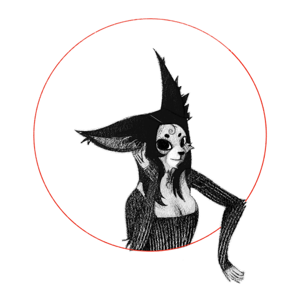

IMAGE EXPLORATION
Image Exploration
Concept experiments and prompt iteration · Placeholder

AI-assisted visual experiments, process, and final selections.
Concept experiments and prompt iteration · Placeholder
Selection, refinement, and post-production · Placeholder
Artwork and project notes · Placeholder